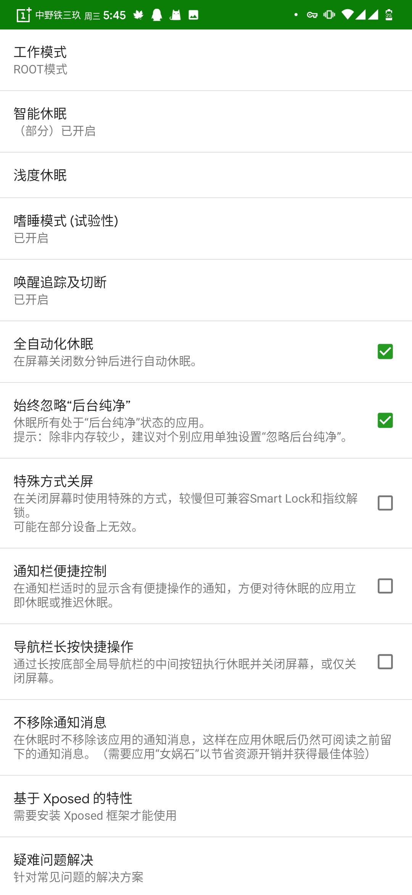
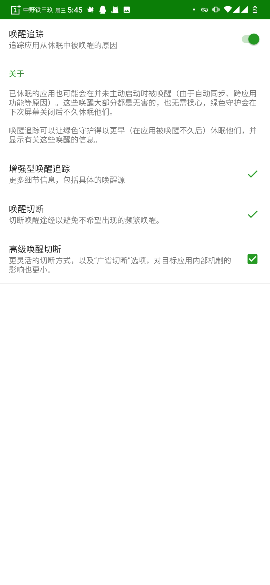
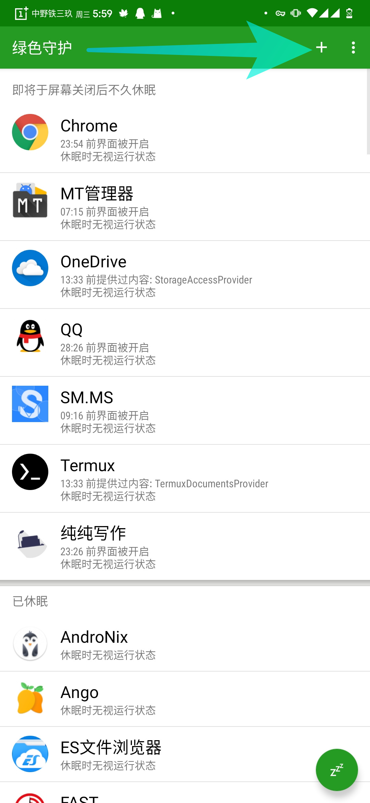
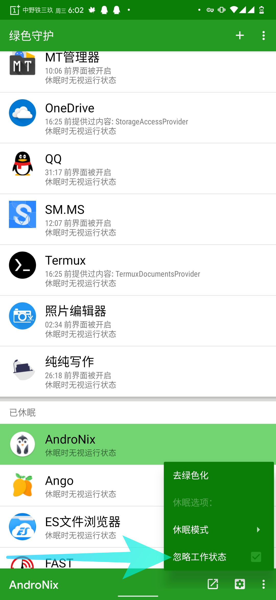

在类原生中一些实用的后台管理方案
绿色守护
合理的后台管理方案是app ops + 绿色守护(不要说什么黑域)
本人本文并没针对黑域 只是他的运行方案不适合本文
绿色守护的正确使用
勾上这些东西(这些是中文的，自行考虑)


将应用添加绿色化
我基本除了面具 输入法等重要的不加入外，其他全部绿色化

个性化配置绿色化的app
忽略工作状态指的是这个app正在后台工作，我们也直接掐死

绿色守护大的触发
绿色守护大部分情况需要手动触发，当然息屏休眠，压制唤醒他是自动的(不一定有效)
自行解决如何快捷触发的问题(没有按键自定义的悬浮求也是不错的选择)